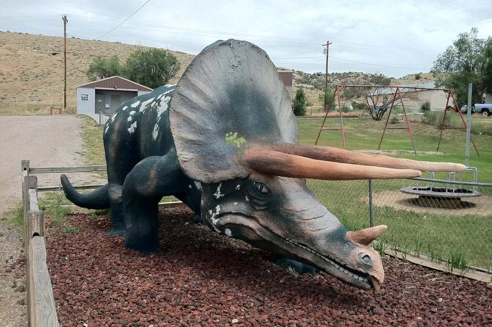
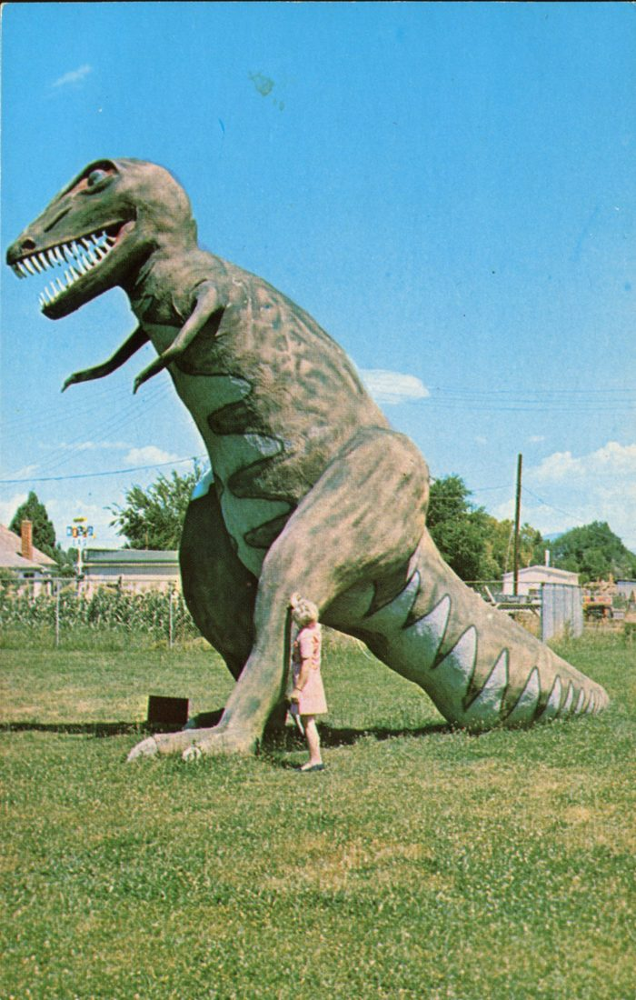
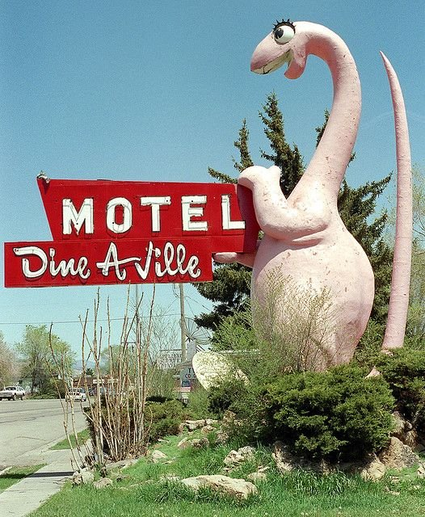

> dino.sys · extinction protocols · roadside fossils · ancient aliens energy (peer-reviewed: no) ·
root@entropy:~/dino# ./extinction.sh --verbose
DINO.SYS — EXTINCTION & THE MACHINE
roadside statues · deep time · wild tech analogies

> NODE: Dinosaur, Colorado
Dinosaur, CO is a tiny town near Utah that fully committed to the bit. Oversized sculptures greet travelers toward Dinosaur National Monument — real Jurassic fossils locked in rock. Mid-century roadside dinosaurs were tourism firmware: fiberglass, concrete, bright paint, planted by highways like beacon packets.
The town was Artesia until 1966, then renamed itself Dinosaur. Streets became Tyrannosaurus Trail and friends. The statues are a wink at deep-time fossils — and, if you squint like Ancient Aliens, a reminder that entire operating systems of life can blue-screen.
Photo shared on an earlier Harvest board · hosted locally (under 2 MB).
> BRIEFING — extinction as a tech parable
Sixty-six million years ago the non-avian dinosaurs hit a hard outage: asteroid impact, climate cascade, food-web collapse. The Chicxulub event was the ultimate DDoS on the biosphere — a sudden input that overwhelmed every buffer.
Wild connections (Ancient Aliens mode, not paleontology peer review):
Single point of failure — one rock from space ≈ one bad deploy taking down a planet-scale service.
Tech debt in the fossil record — oversized apex predators with brittle food chains look a lot like monoculture stacks that can’t failover.
Birds as the surviving fork — avian dinosaurs kept the repo alive as a lighter, more portable branch. Migration = distributed redundancy.
Roadside dinos as cargo cult UI — we rebuild the icons of a lost system in concrete and fiberglass, like shrines to an API that no longer responds.
Asteroid ≈ AGI panic fanfic — sudden intelligence (or sudden rock) arrives from “outside”; the locals either adapt or become oil.
Keep the dino page. Reframe it: extinction isn’t just sad bones — it’s a story about fragile systems, bold rebuilds, and why we still put giant lizards by the interstate.
Eight giant roadside dinosaurs · the builders · still standing after their species’ outage. Cycle 7 adds Vernal, Utah’s George the T. Rex and Dinah the pink Dine-A-Ville dinosaur.
Off I-10 near Palm Springs: 150-ft Brontosaurus Dinny and 65-ft T. rex Mr. Rex, built to pull drivers into the Wheel Inn. Dinny 1964–1975; Mr. Rex 1986. Steel and cement salvaged from freeway work. Cameo in Pee-wee's Big Adventure (1985).
Builder:Claude K. Bell (1896–1988) — Atlantic City sand sculptor who saw Lucy the Elephant and decided to go bigger. Knott's Berry Farm concrete figures; spent decades and savings on these dinosaurs.
Concrete herd on a hilltop, dedicated May 22, 1936 — WPA Project #960, free forever, National Register since 1990. Tourist bait en route to Mount Rushmore.
Builder:Emmet Sullivan (1887–1970). Later: Wall Drug dino, Dinosaur World (AR), Christ of the Ozarks.
6. Quarry Stegosaurus · Dinosaur National Monument, UT
Another Jonas World's Fair dino, parked beside a wall of real Jurassic bones — the perfect neighbor for Dinosaur, CO.
Builder: Louis Paul Jonas Studios (see #5).

vintage postcard photo (from a Cycle 7 Lucid sticky) · replaces the Cycle 7 drawing · statue at 850 US-40, Vernal
7. George the T. Rex · Vernal, UT
Vernal’s famous 23-ft green T. rex — built in 1969 by George Millecam as one of seven concrete dinos for the Dine-A-Ville Motel, moved to its west-side US-40 spot in 1971, and given to the town when curb-and-gutter taxes got personal. For years the city dressed him for holidays; in 2024 Vernal restored him to a respectable likeness and named him George.
Builder: George Millecam (carpenter; seven concrete dinos in the late 1960s). Neighbour to Dinah (#8) and Dinosaur National Monument.

vintage photo of the Dine-A-Ville Motel sign (from a Cycle 7 Lucid sticky) · Dinah the Pink Dinosaur
8. Dinah · Dine-A-Ville Motel · Vernal, UT
The 40-ft cotton-candy-pink anthropomorphic dino that once held the Dine-A-Ville Motel sign on US-40. Designed in 1958 by Helen Millecam; after the motel closed she was trucked to the east end of town as Vernal’s greeter, listed on the National Register of Historic Places, and painted a pink the city claims is unique.
Builders: Helen & George Millecam (YESCO sign company for the original fiberglass Bront). Official town mascot energy.
Facts from Wikipedia on each attraction/sculptor · photos Wikimedia Commons, plus two vintage photos left on Lucid stickies in Cycle 7 (George and the Dine-A-Ville Motel) · roars are synthesized in your browser (no recordings — nobody knows what dinosaurs really sounded like).